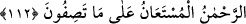

BİZ SENİ
ANCAK ÂLEMLERE RAHMET
OLARAK GÖNDERDİK
107. (Rasûlüm!) Biz seni ancak âlemlere rahmet olarak gönderdik.
108. De ki: Bana sâdece, sizin ilâhınızın ancak bir tek Allah olduğu vahyedildi.
Hâlâ müslüman olmayacak mısınız?
109. Eğer yüz çevirirlerse de ki: (Bana emrolunanı) hepinize açıkladım. Artık
size vaadolunan şey (mahşerde toplanma zamânınız) yakın mı uzak mı, bilmiyorum.
110. Şüphesiz Allah sözün açığını da bilir, gizli tuttuklarınızı da bilir.
111. Bilmiyorum, belki de o (azabın ertelenmesi), sizi denemek ve bir zamâna
kadar sizi (imkânlardan) faydalandırmak içindir.
112. (Muhammed:) Rabbim! (Onlar hakkında) adaletinle hükmünü ver. Bizim
Rabbimiz Rahmân’dır. Sizin anlattıklarınıza karşı yardımı umulandır, dedi.
Ey Muhammed! Burada zikredilenler ve emsâli şer‘î esaslar, hükümler ve bunlardan
başka iki cihanda saâdete vesile olan sâir hususlarla “biz seni ancak âlemlere rahmet
olarak gönderdik.” Çünkü senin kendisiyle gönderdiğin şey, iki cihan saâdetine sebep
ve her iki âlemde onların maslahatlarının menşeidir. Kim ondan yüz çevirir ve
kibirlenirse kendi eliyle kendisini sıkıntıya atmıştır.
Peygamber Efendimiz (a.s.) hakkında: “Kılıçla geldiği ve (ganimet) malları kendisine
mübah kılındığı halde O, nasıl âlemlere rahmet olarak gönderilmişti?” diye îtiraz
edilemez.
Bazıları şöyle demiştir: “Rasûlullah (s.a.), kâfirler için de bir rahmettir. Onun
sebebiyle onların cezâları tehir edilmiş, O’nun sâyesinde hepsinin kökünü kazıyacak bir
azabdan, yerin dibine geçirilmekten, hayvan sûretine sokulmaktan emîn olmuşlardır.”
Bir rivâyette şöyle buyrulmuştur: “Nebî (a.s.) Cibril’e: “Allah “Biz seni ancak
âlemlere rahmet olarak gönderdik” buyuruyor. Bu rahmetten sana da isâbet etti mi?”